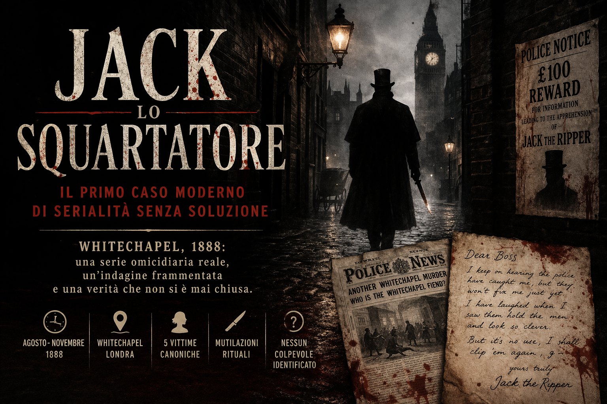

Serie metodologica
Jack lo Squartatore
Una serialità omicidiaria riconoscibile e storicamente persistente che non si trasforma in identificazione certa dell’autore, prova definitiva o chiusura giudiziaria.
Apri la struttura